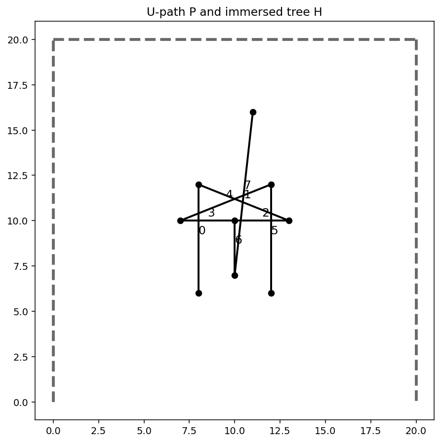
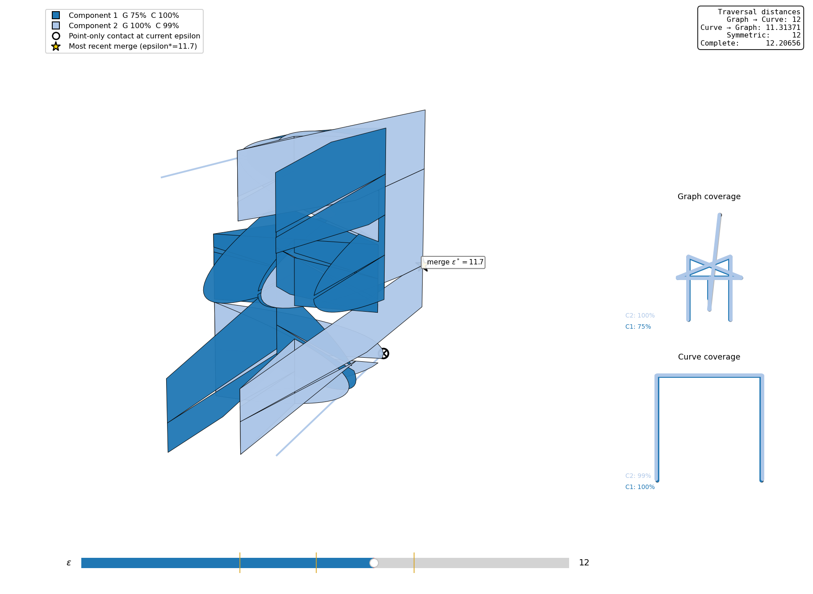
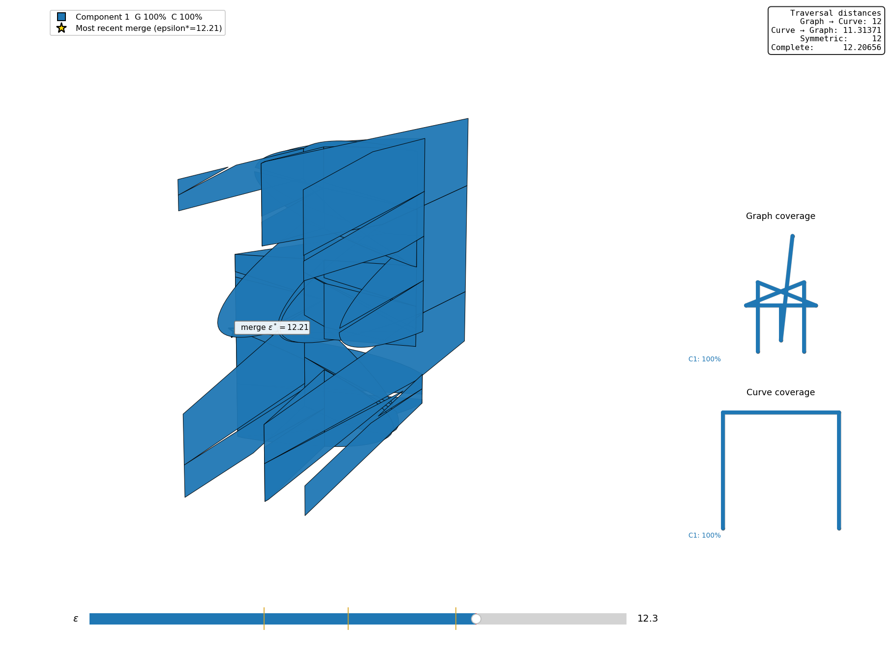

Compute and explore traversal distances between two geometric graphs with straight-line edges.
The library provides three capabilities:
Use compute_traversal_distances or
traversal-distances to obtain the four distance values. Use
traversal_decisions for threshold tests. The command
python3 main.py G H EPSILON runs a threshold computation
and opens a plot.
The code can be run directly from a checkout using Python 3.9 or later. For the distance computations, install NumPy:
python3 -m pip install numpyThe plotting program also uses Matplotlib and GeoJSON:
python3 -m pip install matplotlib geojsonOptionally, install the repository as an editable Python package:
python3 -m pip install -e .This makes traversal_distance importable from other
working directories and installs the traversal-distances
command-line command. Changes made in the checkout are used immediately
because the installation is editable.
Let \(P\) be a U-shaped path and
\(H\) an immersed tree. The runnable
example is examples/u_path_immersed_tree.py,
and the regression test in tests/test_distances.py uses the
same graph-construction function.

The dashed curve is P and the solid tree is H. Geometric crossings of tree edges do not introduce additional vertices.
Run the example from the repository root:
python3 -m examples.u_path_immersed_treeThe example file is:
"""U-path / immersed-tree example used in the README and regression tests."""
from traversal_distance import Graph, compute_traversal_distances, traversal_decisions
def make_u_path_immersed_tree():
"""Return the U-shaped path P and immersed tree H from the README example."""
P = Graph.from_data(
{0: (0, 0), 1: (0, 20), 2: (20, 20), 3: (20, 0)},
{0: (0, 1), 1: (1, 2), 2: (2, 3)},
)
H = Graph.from_data(
{0: (8, 6), 1: (8, 12), 2: (13, 10), 3: (10, 10),
4: (7, 10), 5: (12, 12), 6: (12, 6), 7: (10, 7), 8: (11, 16)},
{0: (0, 1), 1: (1, 2), 2: (2, 3), 3: (3, 4),
4: (4, 5), 5: (5, 6), 6: (3, 7), 7: (7, 8)},
)
return P, H
def main():
P, H = make_u_path_immersed_tree()
d = compute_traversal_distances(P, H, tolerance=1e-6)
print(f"P -> H: {d.first_to_second:.7g}")
print(f"H -> P: {d.second_to_first:.7g}")
print(f"Symmetric: {d.symmetric:.7g}")
print(f"Complete: {d.complete:.7g}")
print("At epsilon 12: ", traversal_decisions(P, H, 12.0))
print("At epsilon 12.3:", traversal_decisions(P, H, 12.3))
if __name__ == "__main__":
main()Output:
P -> H: 11.31371
H -> P: 12
Symmetric: 12
Complete: 12.20656
At epsilon 12: (True, True, False)
At epsilon 12.3: (True, True, True)These approximate the values \(8\sqrt{2}\), \(12\), \(12\), and \(\sqrt{149}\), respectively. Both directed conditions hold at \(\varepsilon=12\), but they are satisfied by different connected components. Neither component covers both inputs, so the complete condition fails.
traversal_decisions returns the two directed decisions
and the complete decision, in that order. The symmetric decision is the
conjunction of the two directed decisions.
The fields first_to_second and
second_to_first follow the order of the arguments to
compute_traversal_distances. The result also provides
tolerance and as_dict().
To read graphs from files instead, use
Graph("PATH/NAME"); the input format is described
below.
Let \(G\) and \(H\) be finite, connected graphs with straight-line edges, with drawings \(\phi_G:G\to\mathbb{R}^2\) and \(\phi_H:H\to\mathbb{R}^2\).
A traversal of a graph is a continuous map from \([0,1]\) onto the entire graph, including every edge interior. A partial traversal is continuous but need not cover the entire graph. Traversals may pause, backtrack, and revisit edges; their starting and ending points are unrestricted.
Both distances minimize the same maximum separation:
\[ \inf_{\tau,\sigma}\;\max_{t\in[0,1]} \left\lVert\phi_G(\tau(t))-\phi_H(\sigma(t))\right\rVert_2. \]
Here \(\tau:[0,1]\to G\) and \(\sigma:[0,1]\to H\) are continuous. Only the coverage requirements differ:
| Distance | Requirement on \(\tau\) | Requirement on \(\sigma\) |
|---|---|---|
| \(\vec{d}_T(G,H)\) | Covers all of \(G\). | May cover only part of \(H\). |
| \(\vec{d}_T(H,G)\) | May cover only part of \(G\). | Covers all of \(H\). |
| \(d_{\mathrm{comp}}(G,H)\) | Covers all of \(G\). | Covers all of \(H\). |
Thus the complete distance imposes full coverage on both maps in one paired traversal. This symmetric variant was introduced by Maike Buchin and Lea Thiel in Comparison of Graph Distance Measures (CG:YRF 2024), where it is denoted \(\delta_{cT}\); see Buchin and Thiel (2024). The two directed distances need not be equal.
The symmetric traversal distance is the maximum of the two directed distances:
\[ d_{\mathrm{sym}}(G,H)=\max\left\{\vec{d}_T(G,H),\vec{d}_T(H,G)\right\}. \]
Each directed distance can use a different paired traversal. Complete traversal requires a single pair covering both inputs, so
\[ d_{\mathrm{sym}}(G,H)\leq d_{\mathrm{comp}}(G,H). \]
The U-path/tree example above illustrates strict inequality.
Connectivity is determined by vertex IDs. A geometric crossing is a graph vertex only when the intersecting edges are split there and use a shared vertex ID. Otherwise, the crossing has distinct preimages in the abstract graph, and a traversal cannot switch between the crossing edges there. Distinct vertices with identical coordinates likewise remain distinct.
Edges are undirected. The order of an edge’s endpoints specifies its parameterization, not a permitted direction of travel.
For a threshold \(\varepsilon\), define
\[ F_\varepsilon(G,H)=\left\{(x,y)\in G\times H: \left\lVert\phi_G(x)-\phi_H(y)\right\rVert_2\leq\varepsilon\right\}. \]
Each distance is at most \(\varepsilon\) precisely under the corresponding coverage condition:
| Required coverage by connected components of \(F_\varepsilon\) | |
|---|---|
| \(\vec{d}_T(G,H)\leq\varepsilon\) | Some component projects onto all of \(G\). |
| \(\vec{d}_T(H,G)\leq\varepsilon\) | Some component projects onto all of \(H\). |
| \(d_{\mathrm{sym}}(G,H)\leq\varepsilon\) | Both directed conditions hold, possibly in different components. |
| \(d_{\mathrm{comp}}(G,H)\leq\varepsilon\) | One component projects onto both \(G\) and \(H\). |
Free space within each edge-pair cell is convex. Cells connect through feasible shared vertex-edge boundaries, including boundaries consisting of a single point. Coverage includes edge interiors, not just vertices.
traversal_decisions(G, H, epsilon) checks the free-space
conditions above. It determines which edge-pair cells are nonempty,
connects them through feasible shared boundaries, and combines the
projection intervals within each connected component. The component must
cover every edge of the required graph.
compute_traversal_distances(G, H) finds the smallest
feasible threshold by bisection. It keeps an interval
whose lower end fails the relevant coverage test and whose upper end
passes it, tests the midpoint, and retains the appropriate half. It
performs this search for both directed distances and the complete
distance, then takes the maximum of the two directed values for the
symmetric distance.
The tolerance argument specifies the target width of the
search interval in coordinate units; its default is 1e-6.
The function returns the passing upper endpoint. The API also accepts
max_iterations, with a default of 80, as a limit on each
search. The reported distance values are decimal approximations obtained
by this search, rather than symbolic critical values.
After installation:
traversal-distances GRAPH1_PREFIX GRAPH2_PREFIXOr use the repository entry point:
python3 distance_main.py GRAPH1_PREFIX GRAPH2_PREFIX --tolerance 1e-6The output lists the two directed values in input order, followed by the symmetric and complete distances.
python3 main.py GRAPH1_PREFIX GRAPH2_PREFIX EPSILONThis command takes a threshold as input, runs a depth-first-search
and projection check, and opens a plot of the graphs with shaded
polygons constructed from free-space boundary intervals. Its console
output reports the threshold, graph sizes, computation statistics, and
projection-check result. It does not search for the four distance
values; use traversal-distances for those values or
traversal_decisions for all threshold tests.
For example:
python3 main.py samples/athens/groundtruth samples/athens/kevin 300.0 -pInput graphs with shaded polygons constructed from free-space boundary intervals at a specified epsilon.

Console output from the threshold computation.
The plot opens by default; -p is accepted but is not
needed to enable it. Use -l to write logs; create the
logs/ directory before running the command:
mkdir -p logs
python3 main.py samples/paris/arc_de_triomphe samples/paris/vehicle 5 -lTo restrict the shaded polygons to selected edge pairs, supply both
-g1_ids and -g2_ids:
python3 main.py samples/paris/arc_de_triomphe samples/paris/vehicle 5 -g1_ids 0 -g2_ids 0,1,2These options select edges for the shaded overlay; they do not restrict the graphs used in the computation.
A prefix NAME refers to two comma-separated files
without a header:
NAME_vertices.txt vertex_id,x,y
NAME_edges.txt edge_id,start_vertex_id,end_vertex_idEach edge joins the two listed vertex IDs. Coordinates and distances use a common Euclidean coordinate system and common units.
The repository includes these sample pairs:
| Location | First graph prefix | Second graph prefix |
|---|---|---|
| Paris | samples/paris/arc_de_triomphe |
samples/paris/vehicle |
| Athens | samples/athens/groundtruth |
samples/athens/kevin |
| Chicago | samples/chicago/groundtruth |
samples/chicago/james |
For example:
python3 distance_main.py samples/paris/arc_de_triomphe samples/paris/vehicleThe Paris graph is disconnected as stored. No continuous traversal can cover all of it, so the distance API reports infinity for the first-to-second, symmetric, and complete distances in this example. The U-path/tree example has finite values for all four distances.
The following figures use FSDvis to display the graph-versus-curve free space for the U-path/tree pair above.

At epsilon 12, Component 1 covers P and Component 2 covers H; neither covers both. In this view the graph input is H and the curve input is P, so the distance panel’s two directed labels appear in the reverse order from the Python call above.

At epsilon 12.3, one component covers both inputs. The distance panel reports the same four distances in both figures: changing epsilon changes the displayed free space, not the input pair or its distances.
FSDvis provides graph-versus-curve free-space diagrams with connected-component colors, an epsilon slider, projection coverage, critical contacts, and displayed traversal distances. It can use this library to compute the displayed values.
The distance API accepts graph-versus-graph inputs. FSDvis visualizes graph-versus-curve inputs, including the U-path/tree pair above.
| Author | Project affiliation | Contact / website |
|---|---|---|
| Dr. Carola Wenk | Tulane University | cwenk@tulane.edu |
| Erfan Hosseini Sereshgi | Tulane University | shosseinisereshgi@tulane.edu |
| Will Rodman | Tulane University | wrodman@tulane.edu |
| Rena Repenning | Morgan Stanley | renarepenning.com |
| Emily Powers | Tulane University | epowers3@tulane.edu |
MIT License • Copyright (c) 2022 Computational Geometry @ Tulane.